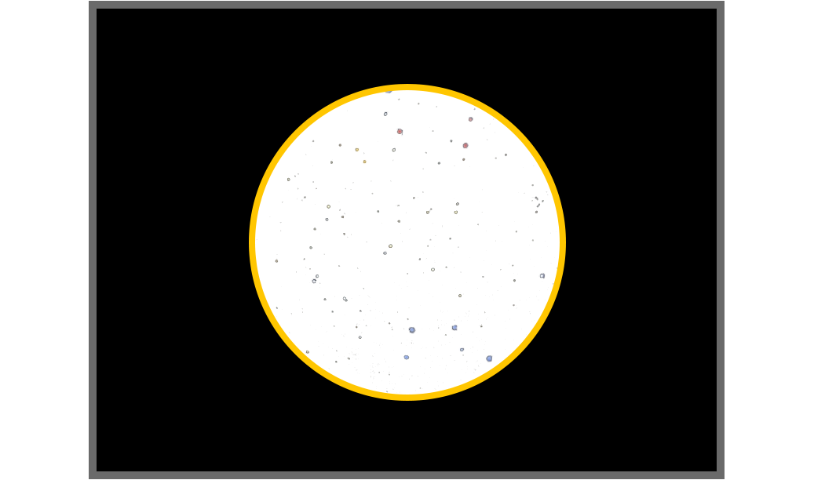
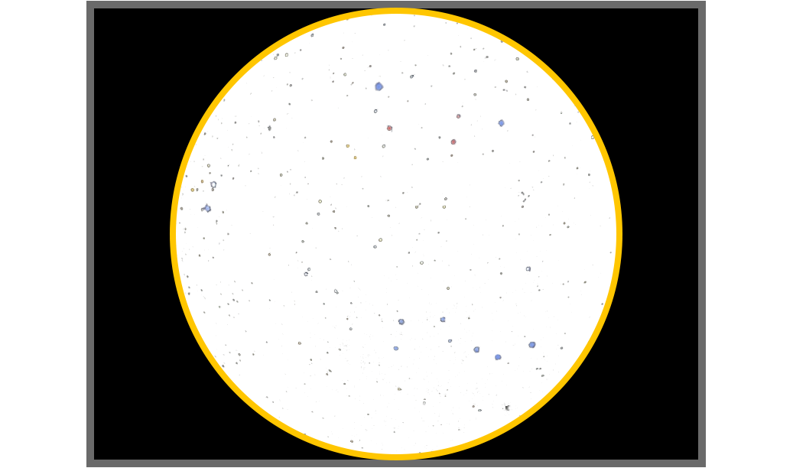
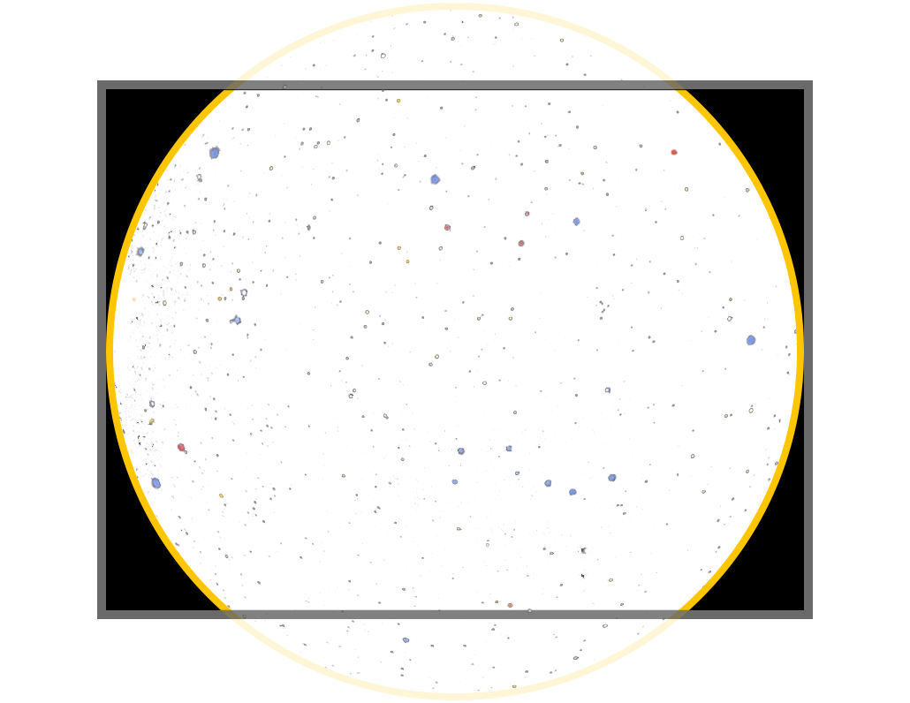
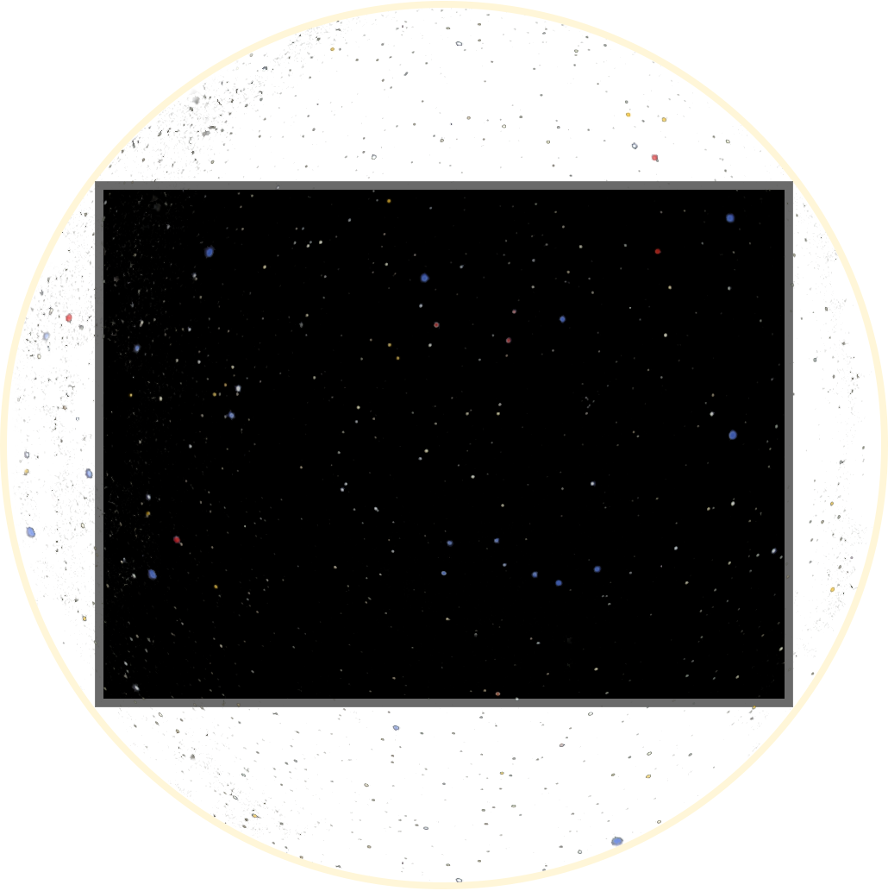
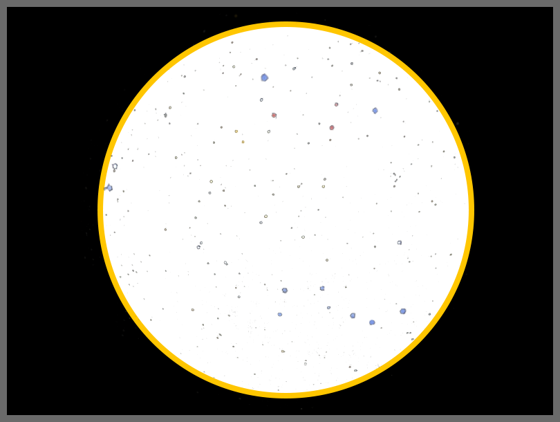
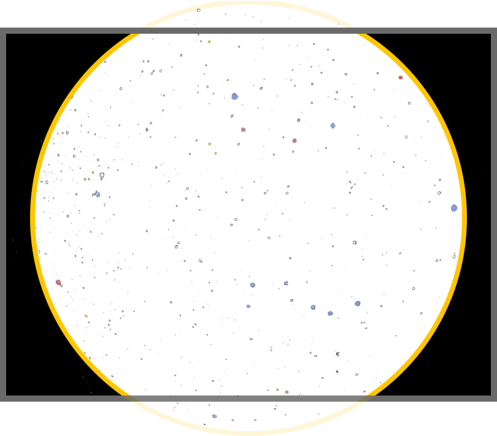
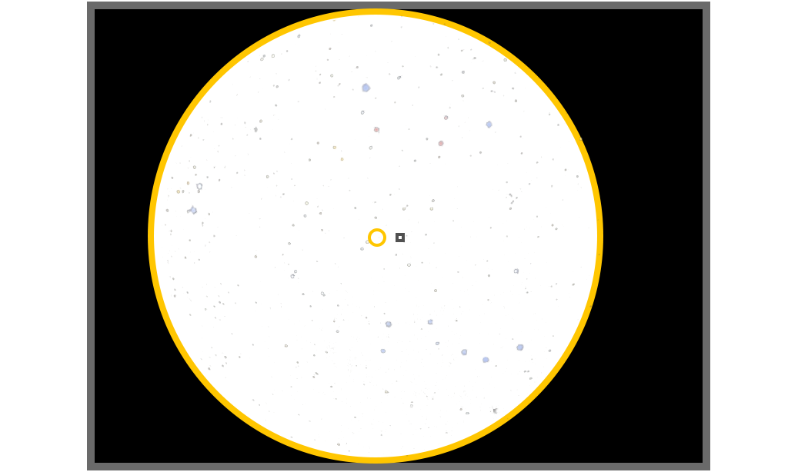

Raspberry Pi choices
A Pi 5 with 8 GB memory is the best choice if you can afford it. It handles everything Allsky currently does and has enough memory and CPU power for the future. You'll notice the speed increase while producing keograms, startrails, and timelapse videos as well as during installation and upgrades. Taking pictures doesn't require much power so you likely won't notice a difference there. If you use the Pi 5 for non-Allsky work you'll likely notice the speed increase as well.
The next best Pi to get is the Pi 4 with 4 GB memory; if that's still too expensive get a Pi 4 with 2 GB memory.
Note that in general, the faster a Pi is, the more heat it produces. If your allsky camera's case is not ventilated you may run into problems.
If the options above are too expensive, a Pi 3B+ with 2 GB memory will also work but will take longer to create timelapse videos, and will limit how often you can create mini-timelapse videos. The 1 GB versions of the Pi 3B+ and Pi 4 will work but require adding more swap space, slowing things down and putting more wear on your SD card.
Do NOT get the Pi Zero - its extremely slow CPU and minimal memory will cause problems. You likely won't be able to create timelapse videos. The Pi Zero 2 has a faster CPU than the Pi Zero but still has limited memory and should only be considered if cost is the ONLY concern. You may or may not be able to do timelapse videos. Future versions of Allsky will likely require more processing power and memory so the Pi Zero 2 may not work in the future.
We have not found any Pi clones except Le Potato to be compatible with Allsky, and it works only with a ZWO ASI120 camera (which we don't recommend).
SD cards
We suggest getting at least a 128 GB SD card. They are fairly inexpensive so if you can afford a 256 GB card, get it - it will let you store more images and videos. Unless you are copying lot of files, the speed of the SD card won't make much of a difference.
Cameras
Your budget will often be the driving factor when picking an allsky camera. The Raspberry Pi HQ (RPi HQ) camera is relatively inexpensive and produces good images but can only be used with a Pi. Many people choose ZWO cameras because they are familiar with them or they have a spare one lying around, and they may use their allsky camera for astrophotography as well.
Some things to consider:- The RPi HQ is hard to beat unless you plan to also use the camera for astrophotography.
- Stay away from the ZWO ASI120 camera. Although it is inexpensive it often produces a lot of errors and many people complain about its noise and hot pixels so have replaced theirs.
- The choice of mono versus color is a personal one. Mono cameras are usually more sensitive so require shorter exposures or less gain, but many people prefer color for its more "natural" look, especially during the day.
- Higher-resolution sensors (for example the RPi HQ @ 4056x3040 and ASI178MC @ 3096x2080) require more memory to produce timelapses, so you may need to follow these suggestions to get timelapse working.
- For allsky use, an extremely high resolution camera (e.g., higher than the RPi HQ) probably isn't useful since the lens and dome cause some distortion that limits the effective resolution.
- Increasing sensor temperature will always increase noise and hot pixels, sometimes to the point of making the image unusable, so many people put a fan in their allsky enclosure to pull in cooler outside air. This can also increase the life of the camera and Pi.
- Different cameras have different dynamic ranges (the difference between the brightest and darkest parts). Increasing a camera's gain will produce brighter, noisier images with less dynamic range. Consult the camera specs to learn more about the trade-off between gain and dynamic range.
- Some RPi and RPi-compatible cameras support auto focus.
That feature sounds great but has some major limitations:
- You will almost always disable auto focus at night - it takes a long time since the camera has to take several long-exposure images to find the correct focus.
- The lenses that come with these cameras typically produce at most a 120 degree field of view. Many allsky lenses produce about 180 degrees. A narrower field of view may not matter if you have a lot of trees and/or buildings blocking the view, however.
- Some people with auto focus lenses focus during the day and may refocus if the temperature changes drastically.
- The "T7C" camera is an OEM version of the ASI120MC-mini. We do not recommend it.
Lenses
Lenses have a few attributes you'll want to be aware of, and together with the camera sensor determine what kind of image you'll see.
Generally, the lower a lens' focal length is (expressed in mm, like 2.1 mm), the wider a field of view (FOV) it produces. Most people like a very wide FOV such as 180 degrees so they can image as much of the sky as possible. Lenses that produce very wide FOVs are usually called fisheye lenses. If your allsky camera is surrounded by lots of trees or buildings and you don't want them in your images, use a higher focal length lens.
Typical focal lengths used in allsky lens are 1.5 mm - 2.5 mm. Some allsky lens can vary their focal length so are called "zoom" lenses. These are more expensive and produce lesser-quality images so are seldom used. Typical FOVs are 120 degrees - 180 degrees.
The aperture of a lens determines how much light it passes through.
Lower numbers let more light through but in general produce fuzzier images
that you may or may not notice.
Typical apertures (prepended by f) used in allsky lens are f 1.4 - f 2.8.
Lenses are round so produce round images. The size of the image it produces on the sensor, measured by its diameter in mm, is called its image circle.
Images produced
Most allsky cameras have rectangular sensors that are wider than they are tall. The images below show a sensor (black with dark gray border) and image circles produced by various fictional lenses (white with stars and a yellow borders).
Depending on the physical size of the sensor and the size of the image circle, you'll get different results, as shown below. There is no "right" or "wrong" combination - it's a personal preference.
- An image circle that is much smaller than the sensor.
This uncommon scenario produces a very small sky image.
 - An image circle whose height is the same as the sensor.
This shows the whole the sky image
and leaves ample room to overlay text and images.
It's rare to have the sensor height and imager circle be identical as shown below.
 - An image circle whose height is bigger than the sensor
but whose width is the same as the sensor.
This cuts off part of the sky image but minimizes the black border,
yet still allows for some space to add text without overwriting the sky image.
Most very wide FOV sky images include some landscape and/or buildings
around the edges so depending on how much of the sky image is cut off,
this combination can be beneficial.
It's rare to have the sensor width and imager circle be identical as shown below.
 - If the lens' image fills the whole sensor you'll see what appears to be
a "normal" image with no black border.
This combination is usually the result of a very small camera sensor.

What kind of image will I get?
To determine which of the examples above you'll get you need to know the physical size of the camera's sensor and the size of the lens' image circle.
Don't confuse a sensor's physical size with its pixel size. The pixel size only determines how fine of detail you'll see in a sky image - it has nothing to do with anything else on this page.
Most camera web pages list the sensor's width and height but you'll normally need to calculate the sensor's diagonal size using a little math:
Take the square root of: ( (sensor_width * sensor_width) + (sensor_height * sensor_height) ) ##### For the RPi HQ camera: The square root of: ( (6.3 mm * 6.3 mm) + (4.7 mm * 4.7 mm) ) = 7.86 mmAlmost all calculators have a "square root" function.
Not all lens web pages list the image circle size - in fact, one of the lenses below didn't list it. You may need to contact the seller or search on the Web.
To see what you'll get, compare the sizes:
- If the image circle size is less than or equal to the sensor height, the full image will fit on the sensor (examples 1 and 2 above).
- If the image circle size is less than the sensor diagonal, the top and bottom of the sky image will be cut off (example 3).
- If the image circle size is greater than the sensor diagonal, the sky image will completely fill the sensor (example 4).
Some common allsky cameras and lenses are shown below followed by an example of the results that different lenses produce using the same camera.
| Common allsky cameras | |||||
|---|---|---|---|---|---|
| Camera | Sensor | Sensor Width | Sensor Height | Sensor Diagonal | Resolution (w x h) |
| RPi HQ | Sony IMX477 | 6.3 mm | 4.7 mm | 7.86 mm | 4056 x 3040 |
| ZWO ASI178 | Sony IMX178 | 7.4 mm | 5.0 mm | 8.93 mm | 3096 x 2080 |
| ZWO ASI224 | Sony IMX224 | 4.9 mm | 3.7 mm | 6.14 mm | 1403 x 976 |
| ZWO ASI290 | Sony IMX290 | 5.6 mm | 3.2 mm | 6.45 mm | 1936 x 1096 |
| Example allsky lenses | ||||
|---|---|---|---|---|
| Lens | Focal length | Image circle | Aperture | FOV |
| cnAICO ACF12F0155IRMM | 1.5 mm | 4.6 mm | F 2.0 | 185 deg |
| cnAICO ACTCS25IR8MPF | 2.5 mm | 6.4 mm | F 1.6 | 190 deg |
| cnAICO ACCF021163MP | 2.1 mm | ?? | F 1.6 | 160 deg |
| cnAICO ACF12FM014IRCMM | 1.4 mm | 4.59 mm | F 1.4 | 182 deg |
As an example, let's use the ZWO ASI178 camera with a couple different lenses.
- Lens # 1, ACF12F0155IRMM: 1.5 mm focal length.
The lens' image circle (4.6 mm) is smaller than the height of the sensor (5.0 mm) so the whole image fits on the sensor. You may want to crop the sides of the image to remove some of the black border and save disk space.
 - Lens # 2, ACTCS25IR8MPF: 2.5 mm focal length.
The lens' image circle (6.4 mm) is larger than the height of the sensor (5.0 mm) but smaller than the width of the sensor (7.4 mm), so you'll see a circle with the top and bottom cut off and some black on the sides.

In the examples above, if you used a camera with a much larger sensor you would see the full cicular image even with the 2.5 mm lens. On the other hand, if you used a much smaller sensor, like the ASI224, you would see a slightly cut-off circle with the 1.5 mm lens and would see a rectangular image with no black using the 2.5 mm lens.
Image offset
It's not uncommon for the sky image to be off center relative to the sensor, as seen below.
The small yellow circle is the center of the sky image and the small dark square is the center
of the sensor.

Most allsky lenses are inexpensive and don't provide "perfect" results.
This is not a problem since you can easily crop the image to center it.